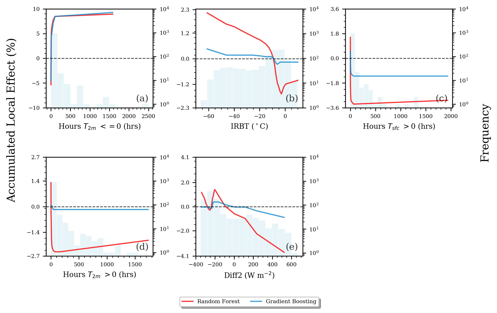
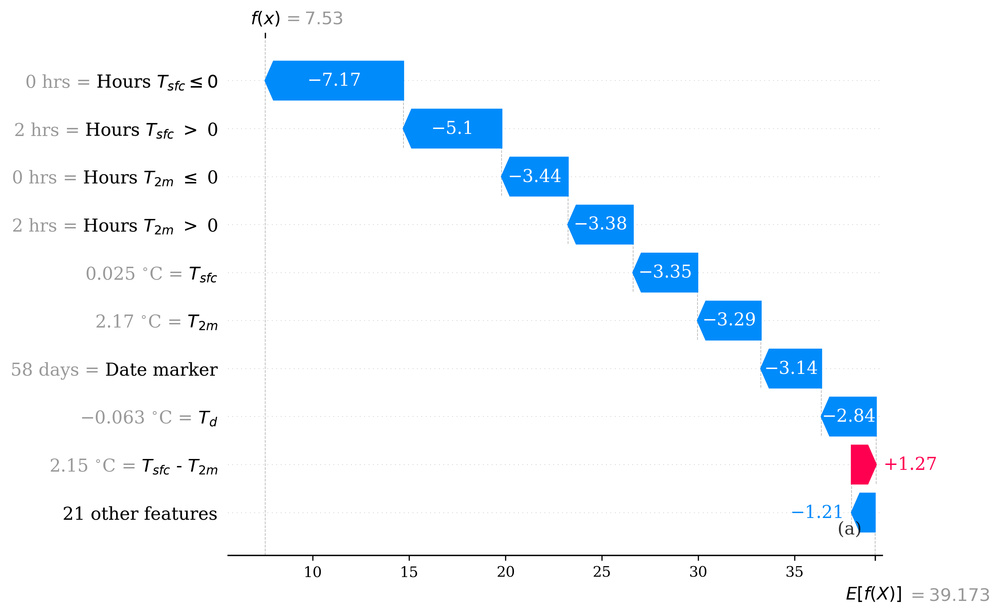
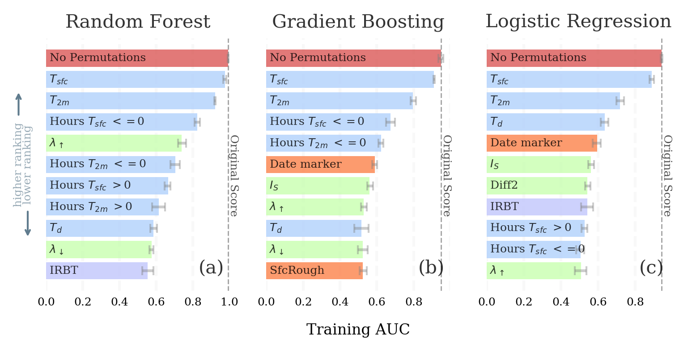
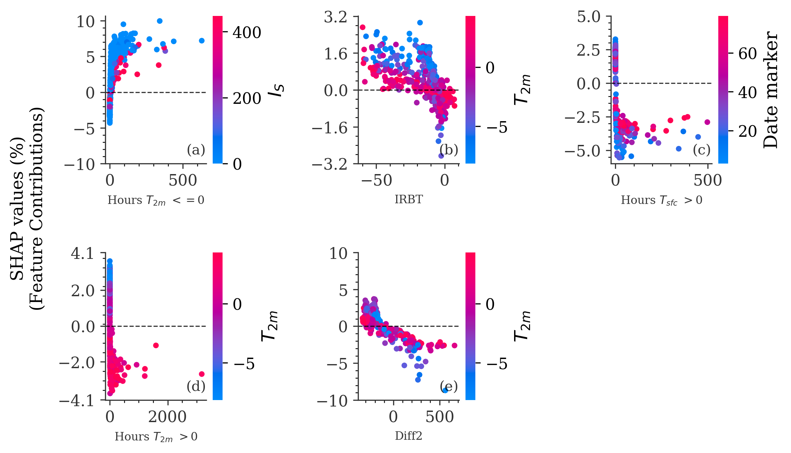

Scikit-Explain Documentation¶
scikit-explain is a user-friendly Python module for machine learning explainability. Current explainability products includes
- Feature importance:
Single- and Multi-pass Permutation Importance (Brieman et al. 2001 , Lakshmanan et al. 2015)
First-order PD/ALE Variance (Greenwell et al. 2018 )
Grouped Permutation Importance (Au et al. 2021)
- Feature Effects/Attributions:
Partial Dependence (PD),
Accumulated local effects (ALE),
Random forest-based feature contributions (treeinterpreter)
Main Effect Complexity (MEC; Molnar et al. 2019)
- Feature Interactions:
Second-order PD/ALE
Interaction Strength and Main Effect Complexity (IAS; Molnar et al. 2019)
Second-order PD/ALE Variance (Greenwell et al. 2018)
Second-order Permutation Importance (Oh et al. 2019)
Friedman H-statistic (Friedman and Popescu 2008)
These explainability methods are discussed at length in Christoph Molnar’s Interpretable Machine Learning. A primary feature of scikit-learn is the accompanying plotting methods, which are desgined to be easy to use while producing publication-level quality figures. Lastly, computations in scikit-explain do leverage parallelization when possible.
The package is under active development and will likely contain bugs or errors. Feel free to raise issues! If you employ scikit-explain in your research, please cite this github and the relevant packages listed above.
Installation¶
pip install scikit-explain
Documentation¶
- class skexplain.main.explain_toolkit.ExplainToolkit(estimators=None, X=Empty DataFrame Columns: [0] Index: [], y=array([], dtype=float64), estimator_output=None, feature_names=None)[source]¶
ExplainToolkit is the primary interface of scikit-explain. The modules contained within compute several explainability machine learning methods such as
Feature importance:
permutation_importance
ale_variance
Feature Attributions:
ale
pd
ice
shap
local_contributions
Feature Interactions:
interaction_strength
ale_variance
perm_based_interaction
friedman_h_stat
main_effect_complexity
ale
pd
Additionally, there are corresponding plotting modules for each method, which are designed to produce publication-quality graphics.
Note
ExplainToolkit is designed to work with estimators that implement predict or predict_proba.
Caution
ExplainToolkit is only designed to work with binary classification and regression problems. In future versions of skexplain, we hope to be compatiable with multi-class classification.
- Parameters
estimators (list of tuples of (estimator name, fitted estimator)) – Tuple of (estimator name, fitted estimator object) or list thereof where the fitted estimator must implement
predictorpredict_proba. Multioutput-multiclass classifiers are not supported.X ({array-like or dataframe} of shape (n_samples, n_features)) – Training or validation data used to compute the IML methods. If ndnumpy.array, must specify feature_names.
y ({list or numpy.array} of shape (n_samples,)) – The target values (class labels in classification, real numbers in regression).
estimator_output (
"raw"or"probability") – What output of the estimator should be explained. Determined internally by ExplainToolkit. However, if using a classification model, the user can set to “raw” for non-probabilistic output.feature_names (array-like of shape (n_features,), dtype=str, default=None) – Name of each feature;
feature_names[i]holds the name of the feature with indexi. By default, the name of the feature corresponds to their numerical index for NumPy array and their column name for pandas dataframe. Feature names are only required ifXis an ndnumpy.array, a it will be converted to a pandas.DataFrame internally.
- Raises
AssertError – Number of estimator objects is not equal to the number of estimator names given!
TypeError – y variable must be numpy array or pandas.DataFrame.
Exception – Feature names must be specified if X is an numpy.array.
ValueError – estimator_output is not an accepted option.
- ale(features=None, n_bins=30, n_jobs=1, subsample=1.0, n_bootstrap=1, random_seed=42)[source]¶
Compute the 1D or 2D centered accumulated local effects (ALE) 9 10. For categorical features, simply set the type of those features in the dataframe as
categoryand the categorical ALE will be computed.References
- 9
- 10
Apley, D. W., and J. Zhu, 2016: Visualizing the Effects of Predictor Variables in Black Box Supervised Learning Models. ArXiv.
- Parameters
features (string or list of strings or 'all') – Features to compute the PD for. if ‘all’, the method will compute the ALE for all features.
n_bins (integer (default=30)) – Number of bins used to compute the ALE for. Bins are decided based on percentile intervals to ensure the same number of samples are in each bin.
n_jobs (float or integer (default=1)) –
if integer, interpreted as the number of processors to use for multiprocessing
if float, interpreted as the fraction of proceesors to use for multiprocessing
subsample (float or integer (default=1.0)) –
if value between 0-1 interpreted as fraction of total X to use
if value > 1, interpreted as the absolute number of random samples of X.
n_bootstrap (integer (default=1; no bootstrapping)) – Number of bootstrap resamples for computing confidence intervals on the ALE curves.
- Returns
results – ALE result dataset
- Return type
xarray.DataSet
- Raises
Exception – Highly skewed data may not be divisable into n_bins given. In that case, calc_ale uses the max bins the data can be divided into. But a warning message is raised.
Examples
>>> import skexplain >>> estimators = skexplain.load_models() # pre-fit estimators within skexplain >>> X, y = skexplain.load_data() # training data >>> # Set the type for categorical features and ExplainToolkit with compute the >>> # categorical ALE. >>> X = X.astype({'urban': 'category', 'rural':'category'}) >>> explainer = skexplain.ExplainToolkit(estimators=estimators ... X=X, ... y=y, ... ) >>> ale = explainer.ale(features='all')
- ale_variance(ale, features=None, estimator_names=None, interaction=False)[source]¶
Compute the standard deviation (std) of the ALE values for each features in a dataset and then rank by the magnitude. A higher std(ALE) indicates a greater expected contribution to an estimator’s prediction and is thus considered more important. If
interaction=True, then the method computes a similar method for the 2D ALE to measure the feature interaction strength.This method is inspired by the feature importance and interaction methods developed in Greenwell et al. (2018) 4.
- Parameters
ale (xarray.Dataset) – Results of
ale()forfeatures.features ('all', string, list of strings, list of 2-tuples) – Features to compute the ALE variance for. If set to
'all', it is computed for all features. Ifinteraction=True, then features must be a list of 2-tuples for computing the interaction between the set of feature combinations.estimator_names (string, list of strings) – If using multiple estimators, you can pass a single (or subset of) estimator name(s) to compute the ALE variance for.
interaction (boolean) –
If True, it computes the feature interaction strength
If False, compute the feature importance
- Returns
results_ds – ALE variance results. Includes both the rankings and scores.
- Return type
xarray.Dataset
References
- 4
Greenwell, B. M., B. C. Boehmke, and A. J. McCarthy, 2018: A Simple and Effective estimator-Based Variable Importance Measure. Arxiv,.
Examples
>>> import skexplain >>> import itertools >>> # pre-fit estimators within skexplain >>> estimators = skexplain.load_models() >>> X, y = skexplain.load_data() # training data >>> explainer = skexplain.ExplainToolkit(estimators=estimators, ... X=X, ... y=y, ... ) >>> ale = explainer.ale(features='all', n_bins=10, subsample=1000, n_bootstrap=1) >>> # Compute 1D ALE variance >>> ale_var_results = explainer.ale_variance(ale) >>> print(ale_var_results) <xarray.Dataset> Dimensions: (n_bootstrap: 1, n_vars_ale_variance: 30) Dimensions without coordinates: n_bootstrap, n_vars_ale_variance Data variables: ale_variance_rankings__Random Forest (n_vars_ale_variance) <U17 'r... ale_variance_scores__Random Forest (n_vars_ale_variance, n_bootstrap) float64 ... ale_variance_rankings__Gradient Boosting (n_vars_ale_variance) <U17 'u... ale_variance_scores__Gradient Boosting (n_vars_ale_variance, n_bootstrap) float64 ... ale_variance_rankings__Logistic Regression (n_vars_ale_variance) <U17 'r... ale_variance_scores__Logistic Regression (n_vars_ale_variance, n_bootstrap) float64 ... Attribute: estimator_output: probability estimators used: ['Random Forest', 'Gradient Boosting', 'Logistic Regre... n_multipass_vars: 5 method: ale_variance direction: backward evaluation_fn: sigma_ale dimension: 1D features used: ['dllwave_flux', 'dwpt2m', 'fric_vel', 'gflux', 'high_... estimator output: probability interaction: False
>>> #Typical, we only want to evaluate the feature interactions for >>> # the most important features >>> important_vars = ['sfc_temp', 'temp2m', 'sfcT_hrs_bl_frez', 'tmp2m_hrs_bl_frez', ... 'uplwav_flux'] >>> # Create all possible combinations >>> important_vars_2d = list(itertools.combinations(important_vars, r=2)) >>> #For the 2D ALE variance to measure feature interaction strength >>> ale_2d = explainer.ale(features=important_vars_2d, n_bins=10, ... subsample=1000, n_bootstrap=1) >>> # Compute 2D ALE variance >>> ale_var_results = explainer.ale_variance(ale_2d, features=important_vars_2d, ... interaction=True) >>> print(ale_var_results) <xarray.Dataset> Dimensions: (n_bootstrap: 1, n_vars_ale_variance_interactions: 10) Dimensions without coordinates: n_bootstrap, n_vars_ale_variance_interactions Data variables: ale_variance_interactions_rankings__Random Forest (n_vars_ale_variance_interactions) <U35 ... ale_variance_interactions_scores__Random Forest (n_vars_ale_variance_interactions, n_bootstrap) float64 ... ale_variance_interactions_rankings__Gradient Boosting (n_vars_ale_variance_interactions) <U35 ... ale_variance_interactions_scores__Gradient Boosting (n_vars_ale_variance_interactions, n_bootstrap) float64 ... ale_variance_interactions_rankings__Logistic Regression (n_vars_ale_variance_interactions) <U35 ... ale_variance_interactions_scores__Logistic Regression (n_vars_ale_variance_interactions, n_bootstrap) float64 ... Attribute: estimator_output: probability estimators used: ['Random Forest', 'Gradient Boosting', 'Logistic Regre... n_multipass_vars: 5 method: ale_variance direction: backward evaluation_fn: Interaction Importance dimension: 2D features used: [('sfc_temp', 'temp2m'), ('sfc_temp', 'sfcT_hrs_bl_fre... estimator output: probability interaction: True
- friedman_h_stat(pd_1d, pd_2d, features, estimator_names=None, **kwargs)[source]¶
Compute the second-order Friedman’s H-statistic for computing feature interactions 11 12. Based on equation (44) from Friedman and Popescu (2008) 12. Only computes the interaction strength between two features. In future versions of skexplain we hope to include the first-order H-statistics that measure the interaction between a single feature and the remaining set of features.
References
- 11
https://christophm.github.io/interpretable-ml-book/interaction.html
- 12(1,2)
Friedman, J. H., and B. E. Popescu, 2008: Predictive learning via rule ensembles. Ann Appl Statistics, 2, 916–954, https://doi.org/10.1214/07-aoas148.
- Parameters
pd_1d (xarray.Dataset) – 1D partial dependence dataset. Results of
pd()forfeaturespd_2d (xarray.Dataset) – 2D partial dependence dataset. Results of
pd(), but 2-tuple combinations offeatures.features (list of 2-tuples of strings) – The pairs of features to compute the feature interaction between.
estimator_names (string, list of strings (default is None)) – If using multiple estimators, you can pass a single (or subset of) estimator name(s) to compute the H-statistic for.
- Returns
results_ds – The second-order Friedman H-statistic for all estimators.
- Return type
xarray.Dataset
Examples
>>> import skexplain >>> # pre-fit estimators within skexplain >>> estimators = skexplain.load_models() >>> X, y = skexplain.load_data() # training data >>> explainer = skexplain.ExplainToolkit(estimators=estimators ... X=X, ... y=y, ... ) >>> pd_1d = explainer.pd(features='all') >>> pd_2d = explainer.pd(features='all_2d') >>> hstat = explainer.friedman_h_stat(pd_1d, pd_2d,)
- get_important_vars(perm_imp_data, multipass=True, n_vars=10, combine=False)[source]¶
Retrieve the most important variables from permutation importance. Can combine rankings from different estimators and only keep those variables that occur in more than one estimator.
- Parameters
perm_imp_data (xarray.Dataset) – Permutation importance result dataset
multipass (boolean (defaults to True)) – if True, return the multipass rankings else returns the singlepass rankings
n_vars (integer (default=10)) – Number of variables to retrieve if multipass=True.
combine (boolean (default=False)) – If combine=True, n_vars can be set such that you only include a certain amount of top features from each estimator. E.g., n_vars=5 and combine=True means to combine the top 5 features from each estimator into a single list.
Examples
- if combine=True
- resultslist
List of top features from a different estimators.
- if combine=False
- resultsdict
keys are the estimator names and items are the top features.
Examples
>>> import skexplain >>> # pre-fit estimators within skexplain >>> estimators = skexplain.load_models() >>> X, y = skexplain.load_data() # training data >>> explainer = skexplain.ExplainToolkit(estimators=estimators ... X=X, ... y=y, ... ) >>> perm_imp_data = explainer.permutation_importance( ... n_vars=10, ... evaluation_fn = 'norm_aupdc', ... direction = 'backward', ... subsample=0.5, ... n_bootstrap=20, ... ) >>> important_vars = explainer.get_important_vars(perm_imp_data, ... multipass=True, n_vars=5, combine=False) ... >>> # set combine=True >>> important_vars = explainer.get_important_vars(perm_imp_data, ... multipass=True, n_vars=5, combine=True)
- grouped_permutation_importance(perm_method, evaluation_fn, scoring_strategy=None, n_permute=1, groups=None, sample_size=100, subsample=1.0, n_jobs=1, clustering_kwargs={'n_clusters': 10})[source]¶
The group only permutation feature importance (GOPFI) from Au et al. 2021 [1]_ (see their equations 10 and 11). This function has a built-in method for clustering features using the sklearn.cluster.FeatureAgglomeration. It also has the ability to compute the results over multiple permutations to improve the feature importance estimate (and provide uncertainty).
Original score = Jointly permute all features Permuted score = Jointly permuting all features except the considered group
Loss metrics := Original_score - Permuted Score Skill Score metrics := Permuted score - Original Score
- Parameters
perm_method (
"grouped"or"grouped_only") –If
"grouped", the features within a group are jointly permuted and other features are left unpermuted.If
"grouped_only", only the features within a group are left unpermuted and other features are jointly permuted.evaluation_fn (string or callable) –
evaluation/scoring function for evaluating the loss of skill once a feature is permuted. evaluation_fn can be set to one of the following strings:
"auc", Area under the Curve"auprc", Area under the Precision-Recall Curve"bss", Brier Skill Score"mse", Mean Square Error"norm_aupdc", Normalized Area under the Performance Diagram (Precision-Recall) Curve
Otherwise, evaluation_fn can be any function of form, evaluation_fn(targets, predictions) and must return a scalar value
When using a custom function, you must also set the scoring strategy (see below).
scoring_strategy (string (default=None)) –
This argument is only required if you are using a non-default evaluation_fn (see above)
If the evaluation_fn is positively-oriented (a higher value is better), then set
scoring_strategy = "minimize"(i.e., a lower score after permutation indicates higher importance) and if it is negatively-oriented- (a lower value is better), then setscoring_strategy = "maximize"n_permute (integer (default=1 for only one permutation per feature)) – Number of permutations for computing confidence intervals on the feature rankings.
groups (dict (default=None)) – Dictionary of group names and the feature names or feature column indices. If None, then the feature groupings are determined internally based on feature clusterings.
sample_size (integer (default=100)) – Number of random samples to determine the correlation for the feature clusterings
subsample (float or integer (default=1.0 for no subsampling)) – if value is between 0-1, it is interpreted as fraction of total X to use if value > 1, interpreted as the number of X to randomly sample from the original dataset.
n_jobs (interger or float (default=1; no multiprocessing)) – if integer, interpreted as the number of processors to use for multiprocessing if float between 0-1, interpreted as the fraction of proceesors to use for multiprocessing
clustering_kwargs (dict (default = {'n_clusters' : 10})) – See https://scikit-learn.org/stable/modules/generated/sklearn.cluster.FeatureAgglomeration.html for details
- Returns
results (xarray.DataSet) – Permutation importance results. Includes the both multi-pass and single-pass feature rankings and the scores with the various features permuted.
groups (dict) – If groups is None, then it returns the groups that were automatically created in the feature clustering. Otherwise, only results is returned.
References
- 1
Au, Q., J. Herbinger, C. Stachl, B. Bischl, and G. Casalicchio, 2021:
Grouped Feature Importance and Combined Features Effect Plot. Arxiv,.
Examples
>>> import skexplain >>> # pre-fit estimators within skexplain >>> estimators = skexplain.load_models() >>> X, y = skexplain.load_data() # training data >>> # Only compute for the first model >>> explainer = skexplain.ExplainToolkit(estimators=estimators[0], ... X=X, ... y=y, ... ) >>> # Group only, the features within a group are the only one's left unpermuted >>> results, groups = explainer.grouped_permutation_importance( ... perm_method = 'grouped_only', ... evaluation_fn = 'norm_aupdc',) >>> print(results) <xarray.Dataset> Dimensions: (n_vars_group: 10, n_bootstrap: 1) Dimensions without coordinates: n_vars_group, n_bootstrap Data variables: group_rankings__Random Forest (n_vars_group) <U7 'group 3' ... 'group 4' group_scores__Random Forest (n_vars_group, n_bootstrap) float64 0.4822... Attributes: estimators used: ['Random Forest'] estimator output: probability estimator_output: probability groups: {'group 0': array(['d_rad_d', 'd_rad_u'], dtype=object... method: grouped_permutation_importance perm_method: grouped_only evaluation_fn: norm_aupdc >>> print(groups) {'group 0': array(['d_rad_d', 'd_rad_u'], dtype=object), 'group 1': array(['high_cloud', 'lat_hf', 'mid_cloud', 'sfcT_hrs_ab_frez', 'date_marker'], dtype=object), 'group 2': array(['dllwave_flux', 'uplwav_flux'], dtype=object), 'group 3': array(['dwpt2m', 'fric_vel', 'sat_irbt', 'sfc_rough', 'sfc_temp', 'temp2m', 'wind10m', 'urban', 'rural', 'hrrr_dT'], dtype=object), 'group 4': array(['low_cloud', 'tot_cloud', 'vbd_flux', 'vdd_flux'], dtype=object), 'group 5': array(['gflux', 'd_ground'], dtype=object), 'group 6': array(['sfcT_hrs_bl_frez', 'tmp2m_hrs_bl_frez'], dtype=object), 'group 7': array(['swave_flux'], dtype=object), 'group 8': array(['sens_hf'], dtype=object), 'group 9': array(['tmp2m_hrs_ab_frez'], dtype=object) }
- ice(features, n_bins=30, n_jobs=1, subsample=1.0, n_bootstrap=1, random_seed=1)[source]¶
Compute the indiviudal conditional expectations (ICE) 7.
References
- Parameters
features (string or list of strings or 'all') – Features to compute the ICE for. if ‘all’, the method will compute the ICE for all features.
n_bins (integer (default=30)) – Number of bins used to compute the ICE for. Bins are decided based on percentile intervals to ensure the same number of samples are in each bin.
n_jobs (float or integer (default=1)) –
if integer, interpreted as the number of processors to use for multiprocessing
if float, interpreted as the fraction of proceesors to use for multiprocessing
subsample (float or integer (default=1.0)) –
if value between 0-1 interpreted as fraction of total X to use
if value > 1, interpreted as the absolute number of random samples of X.
n_bootstrap (integer (default=1; no bootstrapping)) – Number of bootstrap resamples for computing confidence intervals on the ICE curves.
- Returns
results – Main keys are the user-provided estimator names while the sub-key are the features computed for. The items are data for the ICE curves. Also, contains X data (feature values where the ICE curves were computed) for plotting.
- Return type
xarray.DataSet
Examples
>>> import skexplain >>> # pre-fit estimators within skexplain >>> estimators = skexplain.load_models() >>> X, y = skexplain.load_data() # training data >>> explainer = skexplain.ExplainToolkit(estimators=estimators, ... X=X, ... y=y, ... ) >>> ice_ds = explainer.ice(features='all', subsample=200)
- interaction_strength(ale, estimator_names=None, **kwargs)[source]¶
Compute the InterAction Strength (IAS) statistic from Molnar et al. (2019) 5. The IAS varies between 0-1 where values closer to 0 indicate no feature interaction strength.
- Parameters
ale (xarray.Dataset) – Results of
ale(), but must be computed for all featuresestimator_names (string, list of strings (default is None)) – If using multiple estimators, you can pass a single (or subset of) estimator name(s) to compute the IAS for.
kwargs (dict) –
subsample
n_bootstrap
estimator_output
- Returns
results_ds – Interaction strength result dataset
- Return type
xarray.Dataset
Examples
>>> import skexplain >>> # pre-fit estimators within skexplain >>> estimators = skexplain.load_models() >>> X, y = skexplain.load_data() # training data >>> explainer = skexplain.ExplainToolkit(estimators=estimators ... X=X, ... y=y, ... ) >>> ale = explainer.ale(features='all') >>> ias = explainer.interaction_strength(ale)
- load(fnames, dtype='dataset')[source]¶
Load results of a computation (permutation importance, calc_ale, calc_pd, etc)
- Parameters
fnames (string or list of strings) – File names of dataframes or datasets to load.
dtype ('dataset' or 'dataframe') – Indicate whether you are loading a set of xarray.Datasets or pandas.DataFrames
- Returns
results – data for plotting purposes
- Return type
xarray.DataSet or pandas.DataFrame
Examples
>>> import skexplain >>> explainer = skexplain.ExplainToolkit() >>> fname = 'path/to/your/perm_imp_results' >>> perm_imp_data = explainer.load(fnames=fname, dtype='dataset')
- local_contributions(method='shap', performance_based=False, n_samples=100, shap_kwargs=None, lime_kws=None)[source]¶
Computes the individual feature contributions to a predicted outcome for a series of examples either based on tree interpreter (only Tree-based methods) , Shapley Additive Explanations, or Local Interpretable Model-Agnostic Explanations (LIME).
- Parameters
method (
'shap','tree_interpreter', or'lime') – Can use SHAP, treeinterpreter, or LIME to compute the feature contributions. SHAP and LIME are estimator-agnostic while treeinterpreter can only be used on select decision-tree based estimators in scikit-learn (e.g., random forests).performance_based (boolean (default=False)) – If True, will average feature contributions over the best and worst performing of the given X. The number of examples to average over is given by n_samples
n_samples (interger (default=100)) – Number of samples to compute average over if performance_based = True
shap_kwargs (dict) –
Arguments passed to the shap.Explainer object. See https://shap.readthedocs.io/en/latest/generated/shap.Explainer.html#shap.Explainer for details. The main two arguments supported in skexplain is the masker and algorithm options. By default, the masker option uses masker = shap.maskers.Partition(X, max_samples=100, clustering=”correlation”) for hierarchical clustering by correlations. You can also provide a background dataset e.g., background_dataset = shap.sample(X, 100).reset_index(drop=True). The algorithm option is set to “auto” by default.
masker
algorithm
lime_kws (dict) –
Arguments passed to the LimeTabularExplainer object. See https://github.com/marcotcr/lime for details. Generally, you’ll pass the in the following:
training_data
- categorical_names (scikit-explain will attempt to determine it internally,
if it is not passed in)
random_state (for reproduciability)
- Returns
results_df – For each example, contributions from each feature plus the bias The dataframe is nested by the estimator names and additional keys if performance_based=True.
- Return type
nested pandas.DataFrame
Examples
>>> import skexplain >>> import shap >>> # pre-fit estimators within skexplain >>> estimators = skexplain.load_models() >>> X, y = skexplain.load_data() # training data >>> # Only give the X you want contributions for. >>> # In this case, we are using a single example. >>> single_example = X.iloc[[0]] >>> explainer = skexplain.ExplainToolkit(estimators=estimators ... X=single_example, ... ) >>> # Create a background dataset; randomly sample 100 X >>> background_dataset = shap.sample(X, 100) >>> contrib_ds = explainer.local_contributions(method='shap', ... background_dataset=background_dataset)
>>> # For the performance-based contributions, >>> # provide the full set of X and y values. >>> explainer = skexplain.ExplainToolkit(estimators=estimators ... X=X, ... y=y, ... ) >>> contrib_ds = explainer.local_contributions(method='shap', ... background_dataset=background_dataset, ... performance_based=True, n_samples=100)
- main_effect_complexity(ale, estimator_names=None, max_segments=10, approx_error=0.05)[source]¶
Compute the Main Effect Complexity (MEC; Molnar et al. 2019) 5. MEC is the number of linear segements required to approximate the first-order ALE curves averaged over all features. The MEC is weighted-averged by the variance. Higher values indicate a more complex estimator (less interpretable).
References
- 5(1,2)
Molnar, C., G. Casalicchio, and B. Bischl, 2019: Quantifying estimator Complexity via Functional Decomposition for Better Post-Hoc Interpretability. ArXiv.
- Parameters
ale (xarray.Dataset) – Results of
ale(). Must be computed for all features in X.estimator_names (string, list of strings) – If using multiple estimators, you can pass a single (or subset of) estimator name(s) to compute the MEC for.
max_segments (integer; default=10) – Maximum number of linear segments used to approximate the main/first-order effect of a feature. default is 10. Used to limit the computational runtime.
approx_error (float; default=0.05) – The accepted error of the R squared between the piece-wise linear function and the true ALE curve. If the R square is within the approx_error, then no additional segments are added.
- Returns
mec_dict – mec_dict = {estimator_name0 : mec0, estimator_name1 : mec2, …, estimator_nameN : mecN,}
- Return type
dictionary
Examples
>>> import skexplain >>> # pre-fit estimators within skexplain >>> estimators = skexplain.load_models() >>> X, y = skexplain.load_data() # training data >>> explainer = skexplain.ExplainToolkit(estimators=estimators, ... X=X, ... y=y, ... ) >>> ale = explainer.ale(features='all', n_bins=20, subsample=0.5, n_bootstrap=20) >>> # Compute Main Effect Complexity (MEC) >>> mec_ds = explainer.main_effect_complexity(ale) >>> print(mes_ds) {'Random Forest': 2.6792782503392756, 'Gradient Boosting': 2.692392706080586, 'Logistic Regression': 1.6338281469152958}
- pd(features, n_bins=25, n_jobs=1, subsample=1.0, n_bootstrap=1, random_seed=42)[source]¶
Computes the 1D or 2D centered partial dependence (PD) 8.
References
- Parameters
features (string or list of strings or 'all') – Features to compute the PD for. if ‘all’, the method will compute the PD for all features.
n_bins (integer (default=30)) – Number of bins used to compute the PD for. Bins are decided based on percentile intervals to ensure the same number of samples are in each bin.
n_jobs (float or integer (default=1)) –
if integer, interpreted as the number of processors to use for multiprocessing
if float, interpreted as the fraction of proceesors to use for multiprocessing
subsample (float or integer (default=1.0)) –
if value between 0-1 interpreted as fraction of total X to use
if value > 1, interpreted as the absolute number of random samples of X.
n_bootstrap (integer (default=1; no bootstrapping)) – Number of bootstrap resamples for computing confidence intervals on the PD curves.
- Returns
results – Partial dependence result dataset
- Return type
xarray.DataSet
Examples
>>> import skexplain >>> # pre-fit estimators within skexplain >>> estimators = skexplain.load_models() >>> X, y = skexplain.load_data() # training data >>> explainer = skexplain.ExplainToolkit(estimators=estimators ... X=X, ... y=y, ... ) >>> pd = explainer.pd(features='all')
- perm_based_interaction(features, evaluation_fn, estimator_names=None, n_jobs=1, subsample=1.0, n_bootstrap=1, verbose=False)[source]¶
Compute the performance-based feature interactions from Oh (2019) 6. For a pair of features, the loss of skill is recorded for permuting each feature separately and permuting both. If there is no feature interaction and the covariance between the two features is close to zero, the sum of the individual losses will approximately equal the loss of skill from permuting both features. Otherwise, a non-zero difference indicates some interaction. The differences for different pairs of features can be used to rank the strength of any feature interactions.
References
- 6
Oh, Sejong, 2019. Feature Interaction in Terms of Prediction Performance https://www.mdpi.com/2076-3417/9/23/5191
- Parameters
features (list of 2-tuple of strings) – Pairs of features to compute the interaction strength for.
evaluation_fn (string or callable) –
evaluation/scoring function for evaluating the loss of skill once a feature is permuted. evaluation_fn can be set to one of the following strings:
"auc", Area under the Curve"auprc", Area under the Precision-Recall Curve"bss", Brier Skill Score"mse", Mean Square Error"norm_aupdc", Normalized Area under the Performance Diagram (Precision-Recall) Curve
Otherwise, evaluation_fn can be any function of form, evaluation_fn(targets, predictions) and must return a scalar value
estimator_names (string, list of strings) – If using multiple estimators, you can pass a single (or subset of) estimator name(s) to compute for.
subsample (float or integer (default=1.0 for no subsampling)) –
if value is between 0-1, it is interpreted as fraction of total X to use
if value > 1, interpreted as the absolute number of random samples of X.
n_jobs (interger or float (default=1; no multiprocessing)) –
if integer, interpreted as the number of processors to use for multiprocessing
if float between 0-1, interpreted as the fraction of proceesors to use for multiprocessing
n_bootstrap (integer (default=None for no bootstrapping)) – Number of bootstrap resamples for computing confidence intervals on the feature pair rankings.
- Returns
results_ds – Permutation importance-based feature interaction strength results
- Return type
xarray.Dataset
Examples
>>> import skexplain >>> # pre-fit estimators within skexplain >>> estimators = skexplain.load_models() >>> X, y = skexplain.load_data() # training data >>> explainer = skexplain.ExplainToolkit(estimators=estimators, ... X=X, ... y=y, ... ) >>> important_vars = ['sfc_temp', 'temp2m', 'sfcT_hrs_bl_frez', 'tmp2m_hrs_bl_frez', ... 'uplwav_flux'] >>> important_vars_2d = list(itertools.combinations(important_vars, r=2)) >>> perm_based_interact_ds = explainer.perm_based_interaction( ... important_vars_2d, evaluation_fn='norm_aupdc', ... )
- permutation_importance(n_vars, evaluation_fn, direction='backward', subsample=1.0, n_jobs=1, n_permute=1, scoring_strategy=None, verbose=False, return_iterations=False, random_seed=1, to_importance=False)[source]¶
Performs single-pass and/or multi-pass permutation importance using a modified version of the PermutationImportance package (skexplain.PermutationImportance) [1]_. The single-pass approach was first developed in Brieman (2001) 2 and then improved upon in Lakshmanan et al. (2015) 3.
Attention
The permutation importance rankings can be sensitive to the evaluation function used. Consider re-computing with multiple evaluation functions.
Attention
The permutation importance rankings can be sensitive to the direction used. Consider re-computing with both forward- and backward-based methods.
Hint
Since the permutation importance is a marginal-based method, you can often use subsample << 1.0 without substantially altering the feature rankings. Using a subsample << 1.0 can reduce the computation time for larger datasets (e.g., >100 K X), especially since 100-1000s of bootstrap iterations are often required for reliable rankings.
- Parameters
n_vars (integer) – number of variables to calculate the multipass permutation importance for. If
n_vars=1, then only the single-pass permutation importance is computed. Ifn_vars>1, both the single-pass and multiple-pass are computed.evaluation_fn (string or callable) –
evaluation/scoring function for evaluating the loss of skill once a feature is permuted. evaluation_fn can be set to one of the following strings:
"auc", Area under the Curve"auprc", Area under the Precision-Recall Curve"bss", Brier Skill Score"mse", Mean Square Error"norm_aupdc", Normalized Area under the Performance Diagram (Precision-Recall) Curve
Otherwise, evaluation_fn can be any function of form, evaluation_fn(targets, predictions) and must return a scalar value
When using a custom function, you must also set the scoring strategy (see below).
scoring_strategy (string (default=None)) –
This argument is only required if you are using a non-default evaluation_fn (see above)
If the evaluation_fn is positively-oriented (a higher value is better), then set
scoring_strategy = "minimize"(i.e., a lower score after permutation indicates higher importance) and if it is negatively-oriented- (a lower value is better), then setscoring_strategy = "maximize"direction (
"forward"or"backward") – For the multi-pass method. For"backward", the top feature is left permuted before determining the second-most important feature (and so on). For"forward", all features are permuted and then the top features are progressively left unpermuted. For real-world datasets, the two methods often do not produce the same feature rankings and is worth exploring both.subsample (float or integer (default=1.0 for no subsampling)) – if value is between 0-1, it is interpreted as fraction of total X to use if value > 1, interpreted as the number of X to randomly sample from the original dataset.
n_jobs (interger or float (default=1; no multiprocessing)) – if integer, interpreted as the number of processors to use for multiprocessing if float between 0-1, interpreted as the fraction of proceesors to use for multiprocessing
n_permute (integer (default=1 for only one permutation per feature)) – Number of permutations for computing confidence intervals on the feature rankings.
random_seed (int, RandomState instance, default=None) – Pseudo-random number generator to control the permutations of each feature. Pass an int to get reproducible results across function calls.
verbose (boolean) – True for print statements on the progress
- Returns
results – Permutation importance results. Includes the both multi-pass and single-pass feature rankings and the scores with the various features permuted.
- Return type
xarray.DataSet
References
- 1
- 2
Breiman, “Random Forests”, Machine Learning, 45(1), 5-32, 2001.
- 3
Lakshmanan, V., C. Karstens, J. Krause, K. Elmore, A. Ryzhkov, and S. Berkseth, 2015: Which Polarimetric Variables Are Important for Weather/No-Weather Discrimination? Journal of Atmospheric and Oceanic Technology, 32, 1209–1223, https://doi.org/10.1175/jtech-d-13-00205.1.
Examples
>>> import skexplain >>> # pre-fit estimators within skexplain >>> estimators = skexplain.load_models() >>> X, y = skexplain.load_data() # training data >>> # Only compute for the first model >>> explainer = skexplain.ExplainToolkit(estimators=estimators[0], ... X=X, ... y=y, ... ) >>> perm_imp_results = explainer.permutation_importance( ... n_vars=10, ... evaluation_fn = 'norm_aupdc', ... subsample=0.5, ... n_permute=20, ... ) >>> print(perm_imp_results) <xarray.Dataset> Dimensions: (n_permute: 20, n_vars_multipass: 10, n_vars_singlepass: 30) Dimensions without coordinates: n_permute, n_vars_multipass, n_vars_singlepass Data variables: multipass_rankings__Random Forest (n_vars_multipass) <U17 'sfc_te... multipass_scores__Random Forest (n_vars_multipass, n_permute) float64 ... singlepass_rankings__Random Forest (n_vars_singlepass) <U17 'sfc_t... singlepass_scores__Random Forest (n_vars_singlepass, n_permute) float64 ... original_score__Random Forest (n_permute) float64 0.9851 ..... Attributes: estimator_output: probability estimators used: ['Random Forest'] n_multipass_vars: 10 method: permutation_importance direction: backward evaluation_fn: norm_aupdc
- plot_ale(ale=None, features=None, estimator_names=None, add_hist=True, display_feature_names={}, display_units={}, to_probability=None, line_kws={}, **kwargs)[source]¶
Runs the 1D and 2D accumulated local effects plotting.
- Parameters
ale (xarray.Dataset) – Results of
ale()forfeatures.features (string, list of strings, list of 2-tuple of strings) – Features to plot the PD for. To plot for 2D PD, pass a list of 2-tuples of features.
estimator_names (string, list of strings (default is None)) – If using multiple estimators, you can pass a single (or subset of) estimator name(s) to plot for.
add_hist (True/False (default=True)) – If True, adds the histogram of a feature’s values behind the interpret curves.
display_feature_names (dict) –
For plotting purposes. Dictionary that maps the feature names in the pandas.DataFrame to display-friendly versions. E.g.,
display_feature_names = { 'dwpt2m' : '$T_{d}$', }The plotting code can handle latex-style formatting.
display_units (dict) – For plotting purposes. Dictionary that maps the feature names to their units. E.g.,
display_units = { 'dwpt2m' : '$^\circ$C', }line_colors (str or list of strs of len(estimators)) – User-defined colors for curve plotting.
to_probability (boolean) – If True, the values are multipled by 100.
matplotlib. (Keyword arguments include arguments typically used for) – E.g., figsize, hist_color,
- Returns
fig, axes
- Return type
matplotlib figure instance and the corresponding axes
Examples
>>> import skexplain >>> # pre-fit estimators within skexplain >>> estimators = skexplain.load_models() >>> X, y = skexplain.load_data() # training data >>> explainer = skexplain.ExplainToolkit(estimators=estimators ... X=X, ... y=y, ... ) >>> ale = explainer.ale(features='all') >>> # Provide a small subset of features to plot >>> important_vars = ['sfc_temp', 'temp2m', 'sfcT_hrs_bl_frez', ... 'tmp2m_hrs_bl_frez','uplwav_flux'] >>> explainer.plot_ale(ale, features=important_vars)
- plot_box_and_whisker(important_vars, example, display_feature_names={}, display_units={}, **kwargs)[source]¶
Plot the training dataset distribution for a given set of important variables as a box-and-whisker plot. The user provides a single example, which is highlighted over those examples. Useful for real-time explainability.
- important_varsstr or list of strings
List of features to plot
- examplePandas Series, shape = (important_vars,)
Single row dataframe to be overlaid, must have columns equal to the given important_vars
- plot_contributions(contrib=None, features=None, estimator_names=None, display_feature_names={}, **kwargs)[source]¶
Plots the feature contributions.
- Parameters
contrib (Nested pandas.DataFrame) – Results of
local_contributions()features (string or list of strings (default=None)) – Features to plot. If None, all features are eligible to be plotted. However, the default number of features to plot is 10. Can be set by n_vars (see keyword arguments).
estimator_names (string, list of strings (default is None)) – If using multiple estimators, you can pass a single (or subset of) estimator name(s) to compute the IAS for.
display_feature_names (dict) – For plotting purposes. Dictionary that maps the feature names in the pandas.DataFrame to display-friendly versions. E.g., display_feature_names = { ‘dwpt2m’ : ‘T$_{d}$’, } The plotting code can handle latex-style formatting.
matplotlib (Keyword arguments include arguments typically used for) –
- Returns
fig
- Return type
matplotlib figure instance
Examples
>>> import skexplain >>> import shap >>> estimators = skexplain.load_models() # pre-fit estimators within skexplain >>> X, y = skexplain.load_data() # training data >>> # Only give the X you want contributions for. >>> # In this case, we are using a single example. >>> single_example = X.iloc[[0]] >>> explainer = skexplain.ExplainToolkit(estimators=estimators, ... X=single_example, ... ) >>> # Create a background dataset; randomly sample 100 X >>> background_dataset = shap.sample(X, 100) >>> contrib_ds = explainer.local_contributions(method='shap', ... background_dataset=background_dataset)
>>> explainer.plot_contributions(contrib_ds)
- plot_importance(data, panels, plot_correlated_features=False, **kwargs)[source]¶
Method for plotting the permutation importance and other ranking-based results.
- Parameters
panels (List of 2-tuple of (estimator name, method) to determine the sub-panel) –
- matrixing for the plotting. E.g., If you wanted to compare multi-pass to
single-pass permutation importance for a random forest:
panels = [('Random Forest', 'multipass'), ('Random Forest', 'singlepass')The available ranking methods in skexplain include ‘multipass’, ‘singlepass’, ‘perm_based’, ‘ale_variance’, or ‘ale_variance_interactions’.
data (list of xarray.Datasets) –
Results from
For each element in panels, there needs to be a corresponding element in data.
columns (list of strings) – What will be the columns of the plot? These can be x-axis label (default is the different estimator names)
rows (list of strings) – Y-axis label or multiple labels for each row in a multi-panel plot. (default is None).
plot_correlated_features (boolean) – If True, pairs of features with a linear correlation coefficient > 0.8 are annotate/paired by bars or color-coding. This is useful for identifying spurious rankings due to the correlations.
kwargs (keyword arguments) –
num_vars_to_plot (integer) – Number of features to plot from permutation importance calculation.
- Returns
fig
- Return type
matplotlib figure instance
Examples
>>> import skexplain >>> # pre-fit estimators within skexplain >>> estimators = skexplain.load_models() >>> X, y = skexplain.load_data() # training data >>> explainer = skexplain.ExplainToolkit(estimators=estimators, ... X=X, ... y=y, ... ) >>> perm_imp_results = explainer.permutation_importance( ... n_vars=10, ... evaluation_fn = 'norm_aupdc', ... direction = 'backward', ... subsample=0.5, ... n_bootstrap=20, ... ) >>> explainer.plot_importance(data=perm_imp_results, method='multipass')
>>> #If we want to annonate pairs of highly correlated feature pairs >>> explainer.plot_importance(data=perm_imp_results, method='multipass', ... plot_correlated_features=True)
- plot_pd(pd=None, features=None, estimator_names=None, add_hist=True, display_feature_names={}, display_units={}, to_probability=None, line_kws={}, **kwargs)[source]¶
Runs the 1D and 2D partial dependence plotting.
- Parameters
pd (xarray.Dataset) – Results of
pd()forfeatures.features (string, list of strings, list of 2-tuple of strings) – Features to plot the PD for. To plot for 2D PD, pass a list of 2-tuples of features.
estimator_names (string, list of strings (default is None)) – If using multiple estimators, you can pass a single (or subset of) estimator name(s) to plot for.
add_hist (True/False (default=True)) – If True, adds the histogram of a feature’s values behind the interpret curves.
display_feature_names (dict) –
For plotting purposes. Dictionary that maps the feature names in the pandas.DataFrame to display-friendly versions. E.g.,
display_feature_names = { 'dwpt2m' : '$T_{d}$', }The plotting code can handle latex-style formatting.
display_units (dict) – For plotting purposes. Dictionary that maps the feature names to their units. E.g.,
display_units = { 'dwpt2m' : '$^\circ$C', }line_colors (str or list of strs of len(estimators)) – User-defined colors for curve plotting.
to_probability (boolean) – If True, the values are multipled by 100.
matplotlib. (Keyword arguments include arguments typically used for) –
- Returns
fig, axes
- Return type
matplotlib figure instance and the corresponding axes
Examples
>>> import skexplain >>> estimators = skexplain.load_models() # pre-fit estimators within skexplain >>> X, y = skexplain.load_data() # training data >>> explainer = skexplain.ExplainToolkit(estimators=estimators ... X=X, ... y=y, ... ) >>> pd = explainer.calc_pd(features='all') >>> # Provide a small subset of features to plot >>> important_vars = ['sfc_temp', 'temp2m', 'sfcT_hrs_bl_frez', ... 'tmp2m_hrs_bl_frez','uplwav_flux'] >>> explainer.plot_pd(pd, features=important_vars)
- plot_scatter(features, kde=True, subsample=1.0, display_feature_names={}, display_units={}, **kwargs)[source]¶
2-D Scatter plot of ML model predictions. If kde=True, it will plot KDE contours overlays to show highest concentrations. If the model type is classification, then the code will plot KDE contours per class.
- plot_shap(shap_values, estimator_name, plot_type='summary', features=None, display_feature_names={}, display_units={}, **kwargs)[source]¶
Plot the SHapley Additive Explanations (SHAP) 13 14 15 summary plot or dependence plots for various features.
- Parameters
plot_type (
'summary'or'dependence') – if ‘summary’, plots a feature importance-style plot if ‘dependence’, plots a partial depedence style plotshap_values (array of shape (n_samples, n_features)) – SHAP values
features (string or list of strings (default=None)) – features to plots if plot_type is ‘dependence’.
display_feature_names (dict) – For plotting purposes. Dictionary that maps the feature names in the pandas.DataFrame to display-friendly versions. E.g.,
display_feature_names = { 'dwpt2m' : '$T_{d}$', }The plotting code can handle latex-style formatting.display_units (dict) – For plotting purposes. Dictionary that maps the feature names to their units. E.g.,
display_units = { 'dwpt2m' : '$^\circ$C', }to_probability (boolean) – if True, values are multiplied by 100.
- Returns
fig
- Return type
matplotlib figure instance
Examples
>>> import skexplain >>> import shap >>> # pre-fit estimators within skexplain >>> estimators = skexplain.load_models() >>> X, y = skexplain.load_data() # training data >>> explainer = skexplain.ExplainToolkit(estimators=estimators ... X=X, ... y=y, ... ) >>> # Create a background dataset; randomly sample 100 X >>> background_dataset = shap.sample(X, 100) >>> shap_results = explainer.shap(background_dataset) >>> print(estimator_names) ... ['Random Forest', ] >>> shap_values, bias = shap_results[estimator_names[0]] >>> # Plot the SHAP-summary style plot >>> explainer.plot_shap(plot_type='summary',shap_values=shap_values,)
>>> # Plot the SHAP-dependence style plot >>> important_vars = ['sfc_temp', 'temp2m', 'sfcT_hrs_bl_frez', 'tmp2m_hrs_bl_frez','uplwav_flux'] >>> explainer.plot_shap(plot_type='dependence', ... shap_values=shap_values, features=important_vars)
- save(fname, data)[source]¶
Save results of a computation (permutation importance, calc_ale, calc_pd, etc)
- Parameters
fname (string) – filename to store the results in (including path)
data (ExplainToolkit results) – the results of a ExplainToolkit calculation. Can be a dataframe or dataset.
Examples
>>> import skexplain >>> estimators = skexplain.load_models() # pre-fit estimators within skexplain >>> X, y = skexplain.load_data() # training data >>> explainer = skexplain.ExplainToolkit(estimators=estimators ... X=X, ... y=y, ... ) >>> perm_imp_results = explainer.calc_permutation_importance( ... n_vars=10, ... evaluation_fn = 'norm_aupdc', ... direction = 'backward', ... subsample=0.5, ... n_bootstrap=20, ... ) >>> fname = 'path/to/save/the/file' >>> explainer.save(fname, perm_imp_results)
- shap(shap_kwargs={'algorithm': 'auto', 'masker': None})[source]¶
Compute the SHapley Additive Explanations (SHAP) values 13 14 15. By default, we set algorithm =
'auto', so that the best algorithm for a model is determined internally in the SHAP package.- Parameters
shap_kwargs (dict) –
Arguments passed to the shap.Explainer object. See https://shap.readthedocs.io/en/latest/generated/shap.Explainer.html#shap.Explainer for details. The main two arguments supported in skexplain is the masker and algorithm options. By default, the masker option uses masker = shap.maskers.Partition(X, max_samples=100, clustering=”correlation”) for hierarchical clustering by correlations. You can also provide a background dataset e.g., background_dataset = shap.sample(X, 100).reset_index(drop=True). The algorithm option is set to “auto” by default.
masker
algorithm
- Returns
results – A dataset containing shap values [(n_samples, n_features)] for each estimator (e.g., ‘shap_values__estimator_name’), the bias (‘bias__estimator_name’) of shape (n_examples, 1), and the X and y values the shap values were determined from.
- Return type
xarray.Dataset
References
- 13(1,2)
https://christophm.github.io/interpretable-ml-book/shap.html
- 14(1,2)
Lundberg, S. M., G. G. Erion, and S.-I. Lee, 2018: Consistent Individualized Feature Attribution for Tree Ensembles. Arxiv,.
- 15(1,2)
Lundberg, S. M., and Coauthors, 2020: From local explanations to global understanding with explainable AI for trees. Nat Mach Intell, 2, 56–67, https://doi.org/10.1038/s42256-019-0138-9.
Examples
>>> import skexplain >>> import shap >>> # pre-fit estimators within skexplain >>> estimators = skexplain.load_models() >>> X, _ = skexplain.load_data() # training data >>> X_subset = shap.sample(X, 50, random_state=22) >>> explainer = skexplain.ExplainToolkit(estimators=estimators ... X=X_subset,) >>> results = explainer.shap(shap_kwargs={'masker' : ... shap.maskers.Partition(X, max_samples=100, clustering="correlation"), ... 'algorithm' : 'auto'})
Contribute¶
Issue Tracker: github.com/monte-flora/scikit-explain/issues
Source Code: github.com/monte-flora/scikit-explain
Support¶
If you are having issues, please let us know. We have a mailing list located at: monte.flora@noaa.gov
License¶
The project is licensed under the BSD license.
Indices and tables¶
genindex
modindex
search